User Guide¶
Here a user guide for SOL-KiT is given, covering the following:
- Input file structure
- Normalization used in the code
- Grids used
- Basics of each operator and related switches
- Boundary and Initialization Options
- Output Handling and Solver Options
Input file structure¶
The input options for SOL-KiT are contained in .txt files located in the INPUT folder. In this user guide, the names of input variables will be shown in bold, while the filenames will be italic, in the interest of ease of reading. Two kinds of input files exist:
- General input files:
- F_INIT_INPUT.txt
- GRID_INPUT.txt
- NEUT_AND_HEAT_INPUT.txt
- NORMALIZATION_INPUT.txt
- SOLVER_PARAMS_INPUT.txt
- SWITCHES_INPUT.txt
- Custom initialization input files:
- DENS_INPUT.txt
- ION_VEL_INPUT.txt
- NEUTRAL_DENS_INPUT.txt
- TEMPERATURE_INPUT.txt
- X_GRID_INPUT.txt
- Z_PROFILE_INPUT.txt
In addition, the file H_DIPOLE_TRANS_PROB_INPUT.txt contains dipole transition probabilities from the NIST database used in the code.
Custom initialization files will be covered in the Boundary and Initialization Options section.
General input files and their contents will be covered as needed in the following sections.
Normalization¶
Basic normalization parameters are all contained in the NORMALIZATION_INPUT.txt file. These are:
- The ion charge
 (ION_Z)
(ION_Z) - The ion atomic mass
 (ATOMIC_A)
(ATOMIC_A) - Temperature normalization
 in eV (TEMP_0_EV)
in eV (TEMP_0_EV) - Density normalization 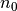 in 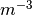 (DENSITY_0)
All other normalizations are derived from the above parameters:
- Velocity - thermal velocity for 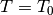 , 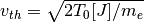 where 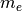 is the electron mass, and 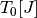 is the normalization temperature in Joules.
- Time - 90 degreee thermal electron-ion collision time, 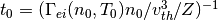 where 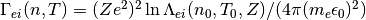. The Coulomb logarithm 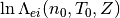 value is taken from the NRL formulary.
- Distance - 90 degree thermal electron-ion mfp , 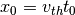.
- Distribution function - 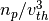.
- Electric field - 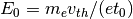.
- Heat flux - 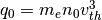.
Grids¶
Before defining the discrete grids used in the code, it is necessary to note that the code uses a spherical harmonic decomposition of the distribution function
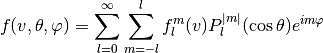
where the spherical coordinates are defined as
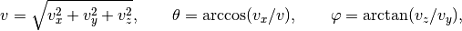
with the  -axis being directed along the magnetic field line. The decomposition allows the separation of hydrodynamic quantities as moments of different harmonics. For a scalar function 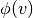
-axis being directed along the magnetic field line. The decomposition allows the separation of hydrodynamic quantities as moments of different harmonics. For a scalar function 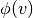
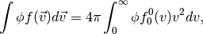
while for a vector function 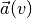
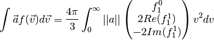
and similarly for higher order tensors (cf. I. P. Shkarofsky, T. W. Johnston, B. M. P., The Particle Kinetics of Plasmas, Addison Wesley, 1966.). However, since we’re treating parallel transport along a field line, and our system has azymuthal symmetry, all harmonics with 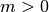 are zero, and the decomposition reduces to a Legendre decomposition.
Grid input data are given in the GRID_INPUT.txt file, and are bundled with timestep data. The equations are solved using a fully implicit backwards Euler method, with either fixed or adaptive timesteps. The timestep inputs are:
- The number of timesteps (TIMESTEP_NUM).
- The number of shorter pretimesteps (PRETIMESTEP_NUM), when fast temporal variation is expected at the start of the simulation.
- The (relative) timestep length,
 (dt), which is adaptive if ADAPTIVE_TIMESTEP_SWITCH in SWITCHES_INPUT.txt is set to true (the timestep is then rescaled to roughly the shortest e-e collisional timescale).
(dt), which is adaptive if ADAPTIVE_TIMESTEP_SWITCH in SWITCHES_INPUT.txt is set to true (the timestep is then rescaled to roughly the shortest e-e collisional timescale). - The (relative) pretimestep length (pre_dt)
- The save interval (T_SAVE), marking how often the code outputs data (for example, if T_SAVE = 10, the code outputs every tenth timestep)
The timestep input data is followed by L_MAX - the highest  -harmonic resolved in the code.
-harmonic resolved in the code.
The velocity grid is characterized by the following three parameters:
- The number of velocity cells, 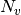 (NUM_V).
- The width of the first cell, 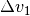 (dv).
- The velocity grid width multiplier, 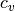 (V_GRID_MULT).
Using these three, the velocity grid is defined as
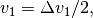
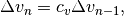

with 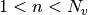. This way, both a geometric and a uniform velocity grid can be treated.
The spatial grid is characterized by the following parameters:
- The number of spatial cells, 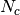 (NUM_C).
- The width of the first cell, 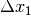 (dx).
- The width of the last cell,
 (SMALL_dx), used when LOGARITHMIC_GRID_SWITCH is set to true.
(SMALL_dx), used when LOGARITHMIC_GRID_SWITCH is set to true.
The spatial grid is staggered, with cell centres and boundaries treated differently. The following is the list of quantities evolved in cell centres and on cell boundaries:
Cell centres:
- 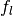 with even
- neutral densities
- ion density (if cold fluid ion mode)
- 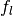 with even
- Cell boundaries:
- with odd
 -field
-field- ion velocity (if cold fluid ion mode)
- with odd
Any quantities not evolved in centres are linearly interpolated from neighbouring boundaries, and vice versa.
The spatial grid is either uniform, uniform with a small last cell with width , or logarithmic with:
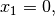
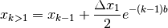
where

Here 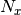 is the total number of spatial points (cell centres and boundaries), and differs for different boundary conditions (see Boundary conditions below). The grid can also be loaded in from X_GRID_INPUT.txt by setting X_GRID_FROM_FILE in SWITCHES_INPUT.txt to true.
General equations¶
SOL-KiT solves a coupled set of equations, starting with, but not limited to, the 1D kinetic equation for electrons:
(1)¶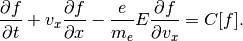
On the LHS are the Vlasov terms, governing advection in space and velocity space. On the RHS is a collection of operators, mainly collision operators. This equation is decomposed using Legendre polynomials (as shown above) into a set of equations for the distribution harmonics . This is the minimal set of unknowns SOL-KiT can solve for.
The set of unknowns can be expanded by adding the following quantities:
- The electric field along the -direction,
- Densities of neutral hydrogen isotope atomic states, 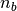, for any number of states (see below)
- Ion density and flow velocity, 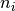 and
 , when treating ions as a fluid
, when treating ions as a fluid - Electron density, temperature, and flow velocity, when treating electrons as a fluid. In this case the distribution harmonics are present in the unknown vector, but are not evolved. Instead, the electrons are treated as a slowly drifting Maxwellian.
To obtain the electric field, we solve the Ampere-Maxwell equation:
(2)¶
where 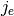 is calculated by taking the appropriate moment of the electron distribution function.
To calculate the ion density and flow velocity we treat it as either a cold fluid (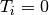) or with 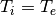. Density evolution is given by the continuity equation:
(3)¶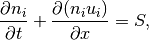
while velocity is governed by the momentum equation
(4)¶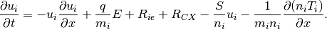
The 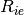 term is the drag felt by the ions due to collisions with electrons, while 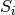 is the ion source term due to atomic processes. 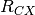 is a simple charge exchange drag operator assuming cold ions and neutrals with a constant CX cross-section.
In order to properly treat atomic processes we can track an arbitrary number of states of hydrogen isotopes. This is done using the following diffusive-reactive Collisional-Radiative model:
(5)¶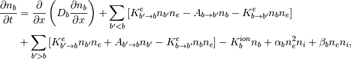
where  is the index of the atomic state, and the terms are the following:
is the index of the atomic state, and the terms are the following:
- Excitation rate due to electron impact from state
 to state , 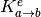
to state , 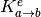 - Ionization rate due to electron impact from state , 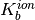
- Spontaneous transition rate from state from state to state , 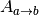
- Three-body recombination rate into state , 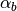
- Radiative recombination rate into state , 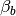
When treating the electrons as a fluid, the following equations are solved instead of the full kinetic set.
The electron continuity equation,
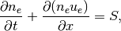
the electron parallel velocity equation,
and the electron temperature equation,
Collision operators¶
SOL-KiT has a rich set of collision operators. Here they will be listed, and their basic properties covered.
The collisions treated can be divided into Coulomb and electron-neutral collisions. Coulomb collision operators included are:
- Electron-electron collisions for the
 harmonic (responsible for relaxation to Maxwellian)
harmonic (responsible for relaxation to Maxwellian) - Electron-electron collisions for harmonics (for they redistribute momentum between electrons)
- Electron-ion collisions for harmonic (these reduce anisotropy and allow us to truncate the harmonic decomposition)
Included electron-neutral collision operators are:
- Elastic collision operators for all harmonics [1] (cool electrons and reduce anisotropy)
- Excitation and de-excitation collisions (particle conserving inelastic collisions)
- Ionization and 3-body recombination collisions (particle creating/destroying inelastic collisions)
Other operators¶
SOL-KiT supports energy and particle source operators, as well as a diffusion operator for the neutrals.
The heating operator is diffusive, and acts on the harmonic, meaning the heating is isotropic. It’s given by
where is the lenght of the heating region upstream (from  ) and where
) and where
with being the heating power flux. The heating operator is currently uniform in space and has a step function type time dependance (after some time it can be turned off).
Note
The heating operator, while designed to leave as little footprint as possible, does deform the distribution function away from Maxwellian.
The particle source operators simply provide a Maxwellian source of particles, either at a set temperature, or with the background temperature of the electrons.
Finally, the diffusion operator for state b is given as
where
with the elastic collision cross-section simply taken to be ( being the Bohr radius). is the thermal speed of neutrals, and with the neutral temperature specified as input (see below). is the charge-exchange cross section for the b-th neutral state.
Configuring the physics operators¶
Here the switches and input variables for the various operators mentioned above will be presented, with their location in the input files and any notable usage rules covered.
Starting with the Ampere-Maxwell law and the LHS of equation (1), the first three switches in the SWITCHES_INPUT.txt file are:
- MAXWELL_SWITCH - Turns on solving for the electric field using Ampere-Maxwell’s law
- X_ADV_SWITCH - Turns on spatial advection (the second LHS term of (1))
- E_ADV_SWITCH - Turns on velocity space advection due to the electric field (third LHS term of (1))
Coulomb collisions are all governed by the following four switches:
- COLL_EE_0_SWITCH - Turns on electron-electron collisions for harmonic
- COLL_EE_L_SWITCH - Turns on electron-electron collisions for harmonics
- DIAG_EE_L_SWITCH - Use only tridiagonal matrix elements in e-e collisions for higher harmonics (used for speed-up, sacrificing accuracy)
- COLL_EI_L_SWITCH - Turns on electron-ion collisions for harmonics
In order to use electron-neutral collisions, neutrals must first be tracked. This is done by setting NEUTRAL_TRACK_SWITCH to true. Neutral parameters can be set up in NEUT_AND_HEAT_INPUT.txt, and are
- NUM_NEUTRALS - Number of tracked neutral states (including ground state)
- NUM_CS_ANGLES - Number of angles used when numerically calculating Legendre moments of cross-sections (safe to leave at default - 72)
- NEUTRAL_DENSITY - Reference neutral density (in normalized units, used in some initializations)
- NEUTRAL_TEMP - Neutral temperature (in normaized units, used in electron-neutral elastic collisions and in neutral diffusion)
- SIGMA_EL - Electron-neutral elastic cross-section (in units of - default 1.00)
Electron-neutral collision operators are set using five switches:
- COLL_EN_EL_0_SWITCH - Turns on elastic electron-neutral collisions for harmonic
- COLL_EN_EL_L_SWITCH - Turns on elastic electron-neutral collisions for harmonics
- COLL_EN_EX - Turns on electron impact (de)excitation and spontaneous emission in both the kinetic equation and in the collisional-radiative model
- COLL_EN_ION - Turns on electron impact ionization in both electron/ion equations and collisional-radiative model
- COLL_RECOMB - Turns on radiative and 3-body recombination in both electron/ion equations and collisional-radiative model
In order to speed up inverse process cross-section calculation, it is possible to turn off its iteration, and use lagged values. This is accomplished by setting FAST_DETAILED_BALANCE_SWITCH to true.
Diffusion of the neutrals is governed by NEUTRAL_DIFFUSION_SWITCH.
Heating can be turned on with HEATING_SWITCH, and the parameters determining it are in NEUT_AND_HEAT_INPUT.txt, and are
- N_HEATING - Number of heated upstream cell centres (determines )
- T_HEATING - Last heating timestep (after which heating is turned off)
- HEAT_POWER - Heating power flux (in )
The particle source can be turned on using PART_SOURCE_SWITCH, with its parameters in NEUT_AND_HEAT_INPUT.txt
- N_PART_SOURCE - Number of upstream source cell centres
- T_PART_SOURCE - Last source timestep (after which the source is turned off)
- P_FLUX_IN - Effective input flux (in normalized units )
- TEMP_PART_SOURCE - Source temperature (in normalized units) if not using background temperature by setting PART_SOURCE_BACKGROUND_TEMP_SWITCH to true.
Fluid ion equations are governed by
- COLD_ION_FLUID_SWITCH - Turn on fluid ions (cold)
- ION_CONT_OFF_SWITCH - Turn off ion continuity equation and force n_i = n_e
- ION_CONV_UPWINDING_SWITCH - Use first order upwinding for ion convection term (applied to fluid electron terms if present)
- SIMPLE_CX_SWITCH - Include simple (cold ion, cold neutral, constant cross-section) charge exchange
- ION_EL_TEMP_SWITCH - Turn on ion pressure gradient term with
Finally, both electrons and ions are treated as a fluid when FULL_FLUID_MODE is set to true.
Boundary options and operators¶
Three general options for boundary conditions are available:
- Fixed
- Reflective (no-flow)
- Periodic
They are set using the following switches:
- PERIODIC_BOUNDARY_SWITCH - Turn on periodic boundaries (incompatible with other boundary options)
- FIXED_BOUNDARY_UP_SWITCH - Fix upstream boundary cell centre to initial values
- FIXED_BOUNDARY_DIV_SWITCH - Fix downstream/divertor boundary cell centre to initial values
- NO_FLOW_BOUNDARY_UP_SWITCH - Assume no electric field or flows on upstream boundary
- NO_FLOW_BOUNDARY_DIV_SWITCH - Assume no electric field or flows on downstream boundary
Note
Fixed and no-flow boundaries can be used together, as long as they refer to different ends of the system (for example, the upstream boundary can’t both be fixed and reflective).
As was noted in the Grids section, different boundary options change the total number of spatial points (cell centres and boundaries) in the system
- For periodic boundary conditions, the system starts with a cell centre and ends with a boundary, so
- Each fixed boundary condition adds an extra cell centre to the specified
- For non-periodic boundaries, , where contains the extra (ghost) cells from any fixed boundaries
Warning
Boundary conditions must be specified, and in case on non-periodic boundaries, each boundary must be specified.
Additional boundary condition operators and switches exist when a divertor target (material surface) boundary condition is needed. These require first setting NO_FLOW_BOUNDARY_DIV_SWITCH to true.
An effective plasma sink can be turned on using PLASMA_SINK_SWITCH. Neutral recycling (surface recombination) can be turned on with RECYCLING_SWITCH. This returns a fraction of ions lost to the boundary as ground state neutrals. The fraction is specified by REC_R in NEUT_AND_HEAT_INPUT.txt.
If fluid ions are not enabled, the plasma is assumed to be flowing out of the system at the Bohm speed. If fluid ions are enabled, the ion flux is calculated using extrapolation, unless NO_EXTRAPOLATION_SWITCH is on, in which case it is again the Bohm flux. This can be overwritten by setting SONIC_OUTFLOW_DIV_SWITCH to true, which makes sure the Bohm criterion is satisfied. It is possible to change the Mach number at the divertor target by changing MACH_N_DIV in NEUT_AND_HEAT_INPUT.txt.
Warning
Not setting SONIC_OUTFLOW_DIV_SWITCH to true in the current version of SOL-KiT can result in non-physical behaviour due to the numerical properties of extrapolation.
Initialization options¶
SOL-KiT has multiple initialization options, ranging from complete in-code initialization to initialization via input files.
The calculated initializations of plasma properties can be either periodic or monotonic, and the _INIT switches are all in the SWITCHES_INPUT.txt file.
Periodic initialization is automatically used if the grid is periodic, and the parameters governing the initialization are in F_INIT_INPUT.txt
- T_AVG - Average temperature,
- T_AMP - Temperature perturbation amplitude,
- T_PHASE - Temperature perturbation phase,
- T_FREQ - Temperature perturbation frequency/wave number,
- DENS_AVG - Average density,
- DENS_AMP - Density perturbation amplitude,
- DENS_PHASE - Density perturbation phase,
- DENS_FREQ - Density perturbation frequency/wave number,
When utilized, this will initialize the electrons as Maxwellian, with temperature and density
There will be no initial electric field or flow when initializing with periodic boundaries.
The monotonic initialization options for the electrons are
- LINEAR_INIT - Initialize temperature and density as linear
- DROP_INIT - Initialize temperature and density with a sharp drop/jump, or as an exponential ramp
- TWO_POINT_M_INIT - Initialize temperature and density from Two-Point model
The boundary values for monotonic initialization are in F_INIT_INPUT.txt
- T_UP - Upstream temperature,
- T_DIV - Divertor/downstream temperature,
- DENS_UP - Upstream density,
- DENS_DIV - Divertor/downstream density,
With these, linear initialization gives

and the Two-Point model
Initializing with a drop/jump/ramp has additional options
- NUM_DROP - Spatial point at which drop/jump happens,
- PLASMA_RAMP_WIDTH - Width of plasma exponential ramp in cells,
If  , a sharp drop/jump is made from , to , at spatial point .
, a sharp drop/jump is made from , to , at spatial point .
If temperature and density are set to , below . Between and we have
After , temperature and density are set to , .
In all above initialization options, all harmonics are initialized to 0, and there are no flows.
If fluid ions are turned on and their velocity is loaded in from ION_VEL_INPUT.txt, if electrons are treated as kinetic, the electron harmonic is initialized as
giving the same flow speed to electrons.  is simply set in the case of fluid electrons.
is simply set in the case of fluid electrons.
The electric field and electron harmonic can be initialized with local values by using a modified equation for

where and are chosen so that the heat flux is the Spitzer-Harm heat flux with zero flow speed.
Finally, it is possible to ignore neutral density initialization and initialize the plasma in a Saha-Boltzmann equialibrium. This is done using LOCAL_SAHA_BOLTZMANN_INIT_SWITCH. This will work with any initialization for the plasma, either automatic or from files. The initial plasma density value is reinterpreted as the total density, , of both plasma and neutrals. In each cell, the local plasma temperature is then used to calculate the plasma density using the Saha equation for hydrogen
where is the ionization potential for state  , and where quasineutrality is assumed. The excited state densities are calculated assuming a Boltzmann distribution of excited states.
, and where quasineutrality is assumed. The excited state densities are calculated assuming a Boltzmann distribution of excited states.
Initialization is also possible from files by using the following switches and populating the corresponding files with arrays of correct length ( for given boundary setup)
- DENSITY_FROM_FILE_INIT - Load electron/ion density from file - DENS_INPUT.txt
- TEMPERATURE_FROM_FILE_INIT - Load electron temperature from file - TEMPERATURE_INPUT.txt
- NEUTRAL_GROUND_DENS_FROM_FILE_INIT - Load neutral ground state density from file - NEUTRAL_DENS_INPUT.txt
- ION_VEL_FROM_FILE_INIT - Load ion velocity from file - ION_VEL_INPUT.txt
- Z_PROFILE_FROM_FILE - Load ionization profile from file
Restart options¶
If SAVE_RESTART_SWITCH is true, a file will be kept after each timestep containing the current state of the system. A separate file will contain the current timestep and real elapsed time, as well as other simulation data. These files are saved in SOL-KiT/INPUT/RESTART/ for easier access.
If RESTART_SWITCH is true, instead of initializing using initialization instructions as explained above, the code will attempt yo load initial conditions from the RESTART folder. Additionally, it will load and start from the current time and timestep number if CONTINUE_RUN_SWITCH is true.
Warning
The code does not check if compatible input is chosen for the restarted run. As such it is up to the user to make sure the continued run is using the desired input (e.g. normalization, switches, grids, etc.).
If the user wishes to restart a run but allow for the modification of the number of harmonics and number of neutral states, this can be achieved using ADAPTIVE_RESTART_SWITCH (it is not possible to reduce the numbers of states or harmonics, only to increase them). This way, the vector saved in the restart folder will be loaded in, but its elements will be distributed into the new initial vector which may have more neutral states or harmonics.
Solver options¶
SOL-KiT uses the BiConjugate Gradient iterative sparse matrix solver from the PETSc library, with default block Jacobi preconditioning. PETSc solver options that can be changed through input are in the SOLVER_PARAMS_INPUT.txt file, and are
- SOLVER_TOL - Solver relative tolerance
- SOLVER_MAX_ITER - Solver maximum number of iteration
Other options in this file include the nonlinear iteration options and the divertor boundary condition cutoff tolerance
- MAX_NONLIN - Maximum number of nonlinear iterations
- NONLIN_TOL - Nonlinear iteration tolerance
- BIS_TOL - Iteration tolerance for electron flux calculation at the divertor boundary
Output options and handling¶
SOL-KiT produces a variety of outputs, the main one being the electron distribution harmonics. Each output file is contained in its designated folder, and contains the timestep it belongs to. For the harmonics in output folder DIST_F, the filename will also contain the harmonic number. All output folders are in the OUTPUT folder in the parent directory.
All output files are in plain text format currently, and are either a single or multi-column space separated arrays. The harmonic output files are organized so that the columns correspond to different -positions, going from upstream to downstream. Rows correspond to the velocity cells, starting from lowest velocity cell.
The following are vector output switches, with brief output explanations and their associated folders
- OUTPUT_DENSITY - Output electron/ion density (DENSITY, ION_DENS)
- OUTPUT_TEMP - Output electron temperature (TEMPERATURE)
- OUTPUT_FLOW_VEL - Output electron/ion flow velocity (FLOW_VEL_X, ION_VEL)
- OUTPUT_HEAT_FLOW - Output electron conduction and total heat flux (HEAT_FLOW_X,HEAT_FLOW_X_TOT)
- OUTPUT_E_FIELD - Output electric field (E_FIELD_X)
- OUTPUT_SH_TEST - Output ratio of calculated heat flux to Spitzer-Harm heat flux (SH_q_ratio)
- OUTPUT_RATE_DATA - Output calculated ionization rates, as well as Maxwellian rates for same density and temperature (S_ION_SK, S_ION_M). Also outputs power density (normalized to ) of individual processes (see files tests.f90 and post_processing.f90 for more details):
- ION_E_RATE - power lost in ionization
- EX_E_RATE - power lost in excitation
- RAD_DEEX_E_RATE - power lost in radiative deexcitation
- RAD_DEC_E_RATE - power lost in radiative recombination
- DEEX_E_RATE - power gained through deexcitation collisions
- REC_3B_E_RATE - power gained through three-body recombination
- NUM_DV_HEATING - numerically calculated Joule heating power
- OUTPUT_ATOMIC_EN_TEST_SWITCH - Output total energy contained in atomic states and thermal motion (ATOMIC_EN_TEST)
- OUTPUT_QN_TEST - Output (QN_TEST)
- OUTPUT_CURRENT_TEST - Output (CURRENT_TEST)
Neutral states can be outputted using the OUTPUT_NEUTRAL_DATA switch, and the output will be a multi-column array, with columns corresponding to the neutral state (from ground to highest), and with rows now being the spatial position, starting from upstream.
Other output folders are
- GRIDS - contains vectors with grid data (spatial positions, velocity cell centre positions, and velocity cell widths)
- SHEATH_DATA - contains files with five entries, the first being the sheath heat transmission coefficient, the second the sheath potential drop normalized to boundary temperature, the third the normalized cut-off velocity, the fourth is the ratio of the extrapolated and used (limited) ion fluxes, while the fifth is 1 if the Bohm value was used, and 0 if extrapolation was used (this file is outputted only when the plasma sink switch is on)
- TIMESTEP_DATA - if ADAPTIVE_TIMESTEP_SWITCH is true, files here will contain the current timestep size (in normalized units), and the elapsed total time in seconds
- TOT_DENS_DATA - if neutrals are tracked, files here will contain the total line-averaged density, the neutral line averaged density, the relative change of the total line-averaged density in the current timestep, and the the relative change of the neutral line-averaged density in the current timestep
SOL-KiT also produces a STATUS.txt file, which is written either when a run is finished normally, or when the solver diverges. If the solver diverges, this file will contain the timestep when the solver diverged, as well as the PETSc KSP divergance flag. A shell script is provided in the OUTPUT folder that quickly clears all output.
Footnotes
| [1] | Currently not properly supported due to lack of cross-section data for elastic collisions |